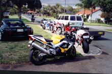
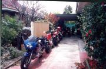
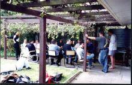
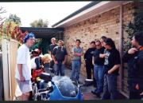
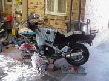
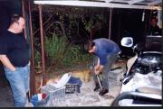

WAR Suspension Day
In early september 2000 a couple of people from WAR asked me to do a short seminar on how to set up suspension on motorcycles. A bit theory and bit practical so they know what to do later on. On a suggestion we decided to open it up to all of WAR and anyone else that wanted to come along. A whole day would be spend playing with bits of bikes.
The Report
As usual, the day started like any other typical WAR organisation. About 9:30 found out that I could get a trailer to bring the BBQ over from Cyril's place [1]. Err.... shit...hmmm... Ring up Paul (Elle's other half) to see if I could get a favour and a ute to help cart it over. Paul arrives at 10:15 and we trundle off to Vic PK to get the barbie. Arrive back at about 10:40 to find Neil and Kit already here (That'll teach them to turn up on time to a WAR gig!). Unload BBQ, have the wheel fall off 3 times on the way wheeling it around the back and the noise of a couple of V Twins is heard rolling into the Street.
Ashley and Marc roll in. Everyone chats for a while and a few more bikes turn up. Ashley wanders off and the SoBL and supporting crowd (Lisa and Wade) shows up. The Fizzer is dropped off and we keep chatting. No sign of KLV yet. SoBL (as do most others) discovers that the concrete is _very_ slippery due to all the dust from the Paint & Panel shop and promptly proceeds to arc up the rear tyre of the Blackbird in a burnout.
Finally Kelly rocks up making quite an entrance in the Lotus. Everybody proceeds to oggle that and go for a few drives while I'm furiously trying to strip down a recalcitrant fork from my spare KR (the banana shape to it doesn't really help the process).
|

"Off-street" parking |

And more bikes around the side of the house |
{kind=link}
{kind=link}
Eventually we get underway at about 12pm. There's about 8 or 9 people there now. We make our way though the various terms that you see cropping up in magazine reviews - rake, trail etc etc. Just as we finish talking about the swingarm the roar of another bike coming up the street is heard. As we all try to guess who it is (hmm...not a V-Twin, got a loud sport's exhaust...) we wander around the front. Shane Rothwell has turned up on a ZX7R that he's got on a test ride (he'd much earlier dropped around his FJ12 on a trailer so we could do the forks on it). After doing the usual tyre kicking he heads off.
|

Getting ready to learn |
{kind=link}
As shane leaves one end of the street, Greg Robinson rolls in the other. Followed in short form by Trevor Calder and a couple of others that I can't remember. Elle wanders in too, pulls out a horse whip (accesorising for the evening's party!) and gives Corks a couple in return for, well, just 'cause he was leaning over looking at a bike. Eventually we wander off around the back and head into the next session.
Now there's about 13 people crowded into the back of the house. Hobzai made the fatal mistake of sitting between Corks and GregR (are we going to have to start the G series of numbering people too as we've now got 3 Gregs there!). We start going through the parts that make up a fork using my now stripped KR fork as a demonstration. We run through how the spring works (single v double v progressive rate springs), what the valve does (why do they always talk about "Gold Valves" in magazine articles) and the seals etc. During this we progress through what preload and compression and rebound damping do. Much chatting and explaining particularly about the effects of fork oils, different values, different springs etc. Somewhere during all of this another couple of people turn up as well.
Lunch is declared. While we get the barbie going, most wander off out the front. Confirming that they are True Motorcyclists (TM), the guys completely ignore Kelly's car and drool over all the bikes instead.
A whole bunch more drop in for a while. Mr Mono (aka Trevor Hedge), smelling a group of motorcyclists and a BBQ, drops in, dropping the customary stoppie to the cheer of the crowd :) Mark Heywood and girlfriend drop in to show off the brand spanking new ZX9R. Also, while tucking in, Jason and his wife Crystal also arrive in The Company Car - a bloody large truck big enough to fit all the bikes in.
|

Demonstrating Tyre types. Two trixxies with different tyres |
{kind=link}
After lunch, we have a quick chat what we're going to do to the bikes and then head off for a quick guided tour ride around the local roads to show people where some good suspension tests are (and twisties! are). Throwing caution to the wind, I decide it's about time I got back on a bike. Rolled the ZX6R out and showed 15 odd bikes around the traps. This is the first time on a bike since breaking my finger at Wanneroo a month and a half ago. Certainly attracted the attention of all the locals as 15 sports bikes, just about all with noisy exhausts go screaming around the local streets.
After getting back, everybody takes the FZR for a quick spin in it's unaltered form. The good thing about this is that the front is in need of heavier compression damping so it showed to people the things that we'd spend the morning talking about. While this is happening, the bike swapping starts. Everyone is riding everything. Kit and Rob get their first taste of big bike riding too.
With the Fizzer riding finished, we proceed to drop it through the triple clamps at the front - 30mm to be precise. That should be interesting :) After taking it for a quick blat, Wade jumps on. When he get's back there's a huge smile and "That's different. Don't know what's changed, but much better". Now everyone proceeds to ride it around like that.
Time's getting late and Shane has started dismembering the front of his FJ. Forks come out and we start to strip them. Those that are left now get a quick lesson on how to strip a set of forks. Unfortunately these ones required getting a large bolt down the inside to separate the piston nuts, which we couldn't fabricate at the time. Unfortunately that killed the rest of the plans for the evening, but everyone got to see the basic process and just how easy it is to pull apart.
|

Shane's FJ12 in pieces |

Shane's FJ12 in pieces |
{kind=link}
{kind=link}
By now it was dark, but a few still hung around. Some coffee and munchies and that's the end of the evening. Everyone slowly trickles off home with the last one out around 8pm. Shower, change and I go clubbing :)
Thanks to all that turned up! Was a great day. I really enjoyed it and hope everyone else did too. Hopefully everyone walked away with a bit of extra knowledge - particularly after feeling the difference in the FZR after just making one simple suspension change. I hope to hear lots of chatter now about people doing changes to their bike to make it feel better.
From what I can remember, here's the roll call for the day. I think there are a few missing, but with so many faces, it's hard to remember everyone:
Greg Robinson ('blade)
Greg Hobzai :) (GXSRLVX)
KLV (Lotus)
Marc Bates (M900)
Trevor Calder (GPX250)
Greg Walton (trX)
Corks (trX)
Rob Issel (Across)
Shane Rothwell (FJ12)
Neil Wade (YZF600)
Kit Low (ZZR250)
Wade Moltoni (VFR750 + FZR600)
Passers By:
Elle & Paul (FJ12s)
Mark Heywood (ZX9R)
Trevor Hedge (Cbr/929)
Jason (FJ12)
Ashley (VFR750)
SoBL (Cbr/1100)
Lisa (Revere)
[1] Mark has just today got a 'net connection so expect him to be chatting on WAR soon. He rides the RD350 that I've been doing all the work to over the past month. He's also a Chiro and is really good at putting motorcyclists back together after accidents :)